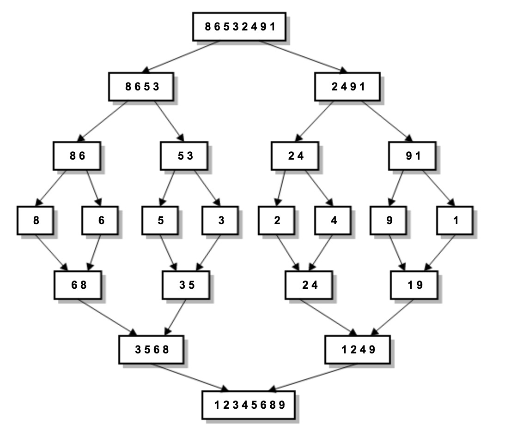

归并排序又称合并排序，它是成功应用分治技术的一个完美例子。对于一个需要排序的数组A[0..n-1],归并排序把它一分为二：A[0..n/2-1]和A[n/2..n-1],并对每个子数组递归排序，然后把这两个排好序的子数组合并为一个有序数组。下面是归并排序的例子图解： 
package com.bob.algorithms.sort;
import java.util.Arrays;
import com.bob.algorithms.SortStrategy;
/**
* 归并排序
*
* @author bob
*
*/
public class SingleThreadMergeSort implements SortStrategy {
public int[] sort(int[] rawArray) {
mergeSort(rawArray);
return rawArray;
}
/**
* 分解并合并排序,升序
*
* @param intArr
*/
private void mergeSort(int[] intArr) {
if (intArr.length > 1) {
// 如果数组长度大于1就分解称两份
int[] leftArray = Arrays.copyOfRange(intArr, 0, intArr.length / 2);
int[] rightArray = Arrays.copyOfRange(intArr, intArr.length / 2, intArr.length);
mergeSort(leftArray);
mergeSort(rightArray);
// 合并且排序
merge(leftArray, rightArray, intArr);
}
}
/**
* 合并排序
*
* @param leftArray
* @param rightArray
* @param intArr
*/
private void merge(int[] leftArray, int[] rightArray, int[] intArr) {
// i：leftArray数组索引，j：rightArray数组索引，k：intArr数组索引
int i = 0, j = 0, k = 0;
while (i < leftArray.length && j < rightArray.length) {
// 当两个数组中都有值的时候，比较当前元素进行选择
if (leftArray[i] < rightArray[j]) {
intArr[k] = leftArray[i];
i++;
} else {
intArr[k] = rightArray[j];
j++;
}
k++;
}
// 将还剩余元素没有遍历完的数组直接追加到intArr后面
if (i == leftArray.length) {
for (; j < rightArray.length; j++, k++) {
intArr[k] = rightArray[j];
}
} else {
for (; i < leftArray.length; i++, k++) {
intArr[k] = leftArray[i];
}
}
}
}Fork/Join是从JDK 1.7 加入的并发计算框架。
package com.bob.algorithms.sort;
import java.util.Arrays;
import java.util.concurrent.ForkJoinPool;
import java.util.concurrent.RecursiveAction;
import com.bob.algorithms.SortStrategy;
public class ForkJoinMergeSort implements SortStrategy {
public int[] sort(int[] rawArray) {
ForkJoinPool pool = new ForkJoinPool();
pool.invoke(new MergeSort(rawArray));
return rawArray;
}
/**
* 使用Fork/join的方式进行归并排序，充分利用cpu
*
* @author zhangwensha
*
*/
private static class MergeSort extends RecursiveAction {
private static final long serialVersionUID = 425572392953885545L;
private int[] intArr;
public MergeSort(int[] intArr) {
this.intArr = intArr;
}
@Override
protected void compute() {
if (intArr.length > 1) {
// 如果数组长度大于1就分解称两份
int[] leftArray = Arrays.copyOfRange(intArr, 0, intArr.length / 2);
int[] rightArray = Arrays.copyOfRange(intArr, intArr.length / 2, intArr.length);
// 这里分成两份执行
invokeAll(new MergeSort(leftArray), new MergeSort(rightArray));
// 合并且排序
merge(leftArray, rightArray, intArr);
}
}
/**
* 合并排序
*
* @param leftArray
* @param rightArray
* @param intArr
*/
private void merge(int[] leftArray, int[] rightArray, int[] intArr) {
// i：leftArray数组索引，j：rightArray数组索引，k：intArr数组索引
int i = 0, j = 0, k = 0;
while (i < leftArray.length && j < rightArray.length) {
// 当两个数组中都有值的时候，比较当前元素进行选择
if (leftArray[i] < rightArray[j]) {
intArr[k] = leftArray[i];
i++;
} else {
intArr[k] = rightArray[j];
j++;
}
k++;
}
// 将还剩余元素没有遍历完的数组直接追加到intArr后面
if (i == leftArray.length) {
for (; j < rightArray.length; j++, k++) {
intArr[k] = rightArray[j];
}
} else {
for (; i < leftArray.length; i++, k++) {
intArr[k] = leftArray[i];
}
}
}
}
}编写了舞台类，通过调整generateIntArray(10000000)的输入参数来设置待排序数组长度，试验中没有对堆容量进行设置。
package com.bob.algorithms;
import java.util.Arrays;
import java.util.Date;
import com.bob.algorithms.common.CommonUtil;
import com.bob.algorithms.sort.ForkJoinMergeSort;
import com.bob.algorithms.sort.SingleThreadMergeSort;
/**
* 舞台类，专门用来测试算法的时间
*
* @author bob
*
*/
public class Stage {
public static void main(String[] args) {
// 变量定义
long begintime = 0;
long endtime = 0;
// 生成排序数据
int[] rawArr = generateIntArray(10000000);
int[] rawArr2 = Arrays.copyOf(rawArr, rawArr.length);
begintime = new Date().getTime();
new SingleThreadMergeSort().sort(rawArr);
//System.out.println(Arrays.toString(new SingleThreadMergeSort().sort(rawArr)));
endtime = new Date().getTime();
System.out.println("单线程归并排序花费时间：" + (endtime - begintime));
System.out.println("是否升序："+CommonUtil.isSorted(rawArr, true));
begintime = new Date().getTime();
new ForkJoinMergeSort().sort(rawArr2);
//System.out.println(Arrays.toString(new ForkJoinMergeSort().sort(rawArr2)));
endtime = new Date().getTime();
System.out.println("Fork/Join归并排序花费时间：" + (endtime - begintime));
System.out.println("是否升序："+CommonUtil.isSorted(rawArr2, true));
}
/**
* 生成int类型的数组
*
* @return
*/
private static int[] generateIntArray(int length) {
int[] intArr = new int[length];
for (int i = 0; i < length; i++) {
intArr[i] = new Double(Math.random() * length).intValue();
}
return intArr;
}
}以下是数组容量在各个量级时，两种方法效率对比：
| 数组长度 | 100 | 1000 | 10000 | 100000 | 1000000 | 10000000 |
|---|---|---|---|---|---|---|
| 单线程 (ms) | 1 | 2 | 7 | 33 | 188 | 2139 |
| Fork／Join (ms) | 8 | 9 | 17 | 63 | 358 | 1133 |
通过统计可以发现，当待排序序列长度较小时，使用单线程效率要高于多线程，但是随着数量不断增加，多线程执行时间越来越接近单线程的执行时间，最终在1000万这个量级开始速率远超单线程。工作中不能滥用多线程，在该使用的时候使用可以加快效率，充分利用多核。但是在不该用的时候使用徒增工作量，有可能效率还不如单线程。 感兴趣的朋友可以通过下面代码地址找到运行的全部源码自己跑跑试试看。
包括本篇在内以后所有代码统一存放地址为：
https://github.com/mingbozhang/algorithm
## 六、参考
https://docs.oracle.com/javase/tutorial/essential/concurrency/forkjoin.html
《算法设计与分析基础（第3版）》